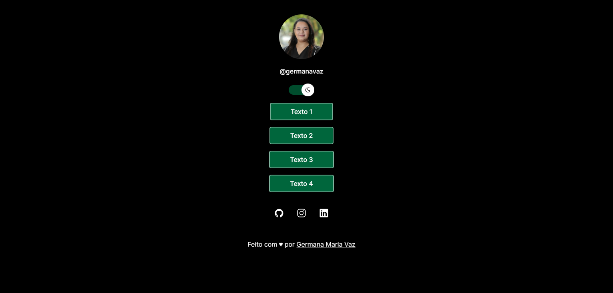

Projetos  Links 🖇️ Projeto desenvolvido em HTML, CSS e JavaScript. Site desenvolvido para armazenar links de redes sociais, com o mecanismo de dark e light mode. HTML CSS JavaScript Live Demo Código Links 🖇️ Projeto desenvolvido em HTML, CSS e JavaScript. Site desenvolvido para armazenar links de redes sociais, com o mecanismo de dark e light mode. HTML CSS JavaScript Live Demo Código Mais projetos